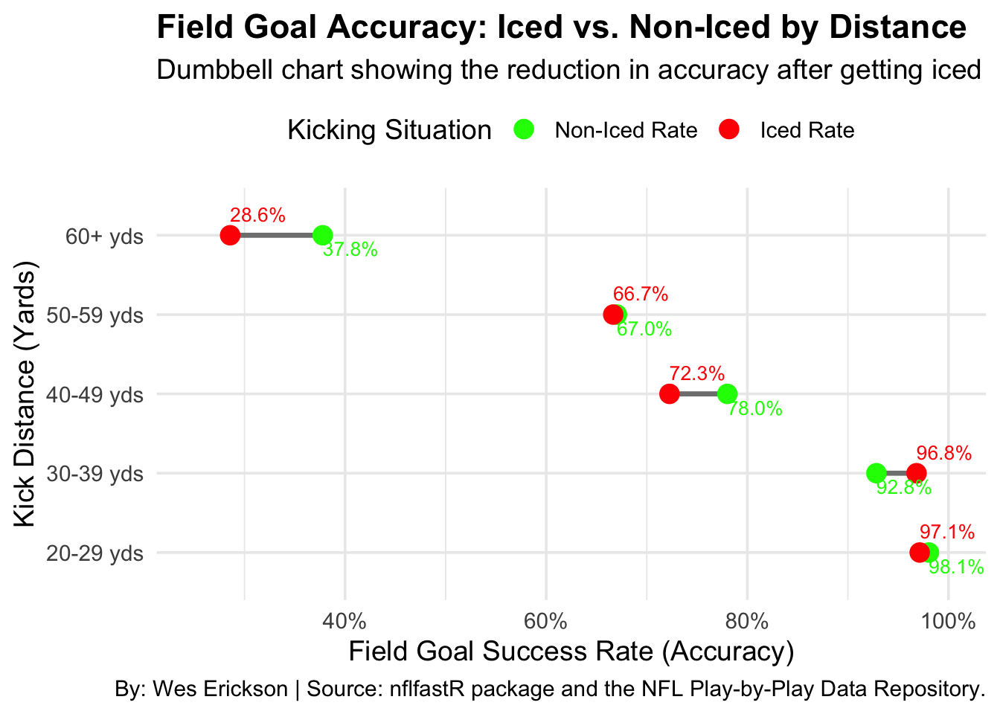
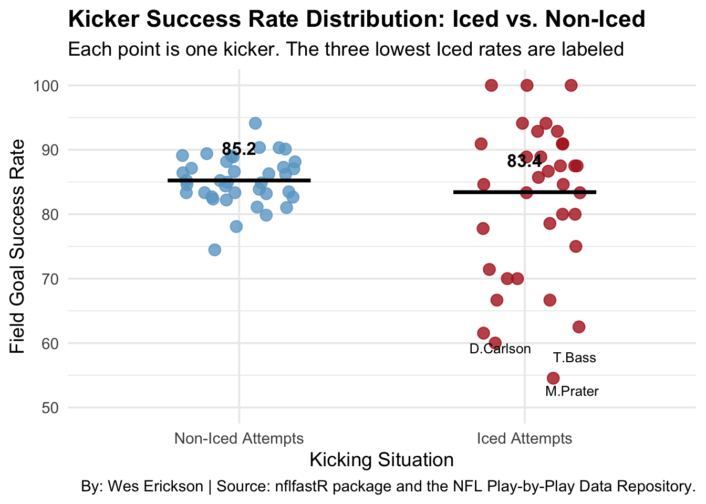

How much pressure does a timeout add to a fieldgoal?
football
kicking
Author
Wes Erickson
Published
November 4, 2025
Many coaches call a timeout right before a kicker kicks a field-goal. Does this really do anything?
In the NFL many games come down to the last minute and a team could only need a field goal. At this point many coaches still have a timeout. So how does this affect a kicker can some do better and some do worse? Does this distance matter on the kick to determine how well a kicker might do?
We need to find the data for fieldgoals and search through to see if there was a timeout called before. So we are going to use nflfastR package so we can go through the NFL play-by-play searching for the results that we want.
Code
library(tidyverse)
── Attaching core tidyverse packages ──────────────────────────────────────────── tidyverse 2.0.0 ──
✔ dplyr 1.1.4 ✔ readr 2.1.5
✔ forcats 1.0.0 ✔ stringr 1.5.2
✔ ggplot2 4.0.0 ✔ tibble 3.3.0
✔ lubridate 1.9.4 ✔ tidyr 1.3.1
✔ purrr 1.1.0
── Conflicts ────────────────────────────────────────────────────────────── tidyverse_conflicts() ──
✖ dplyr::filter() masks stats::filter()
✖ dplyr::lag() masks stats::lag()
ℹ Use the conflicted package (<http://conflicted.r-lib.org/>) to force all conflicts to become errors
Code
library(nflfastR)library(scales)
Attaching package: 'scales'
The following object is masked from 'package:purrr':
discard
The following object is masked from 'package:readr':
col_factor
Code
library(ggalt)
Registered S3 methods overwritten by 'ggalt':
method from
grobHeight.absoluteGrob ggplot2
grobWidth.absoluteGrob ggplot2
grobX.absoluteGrob ggplot2
grobY.absoluteGrob ggplot2
# CHUNK: Dumbbell Chart chart_dumbbell <- distance_rates |>filter(!is.na(success_rate) & count >0) |>filter(!is.na(iced_kicker)) |>ggplot(aes(x = success_rate, y = distance_bin, color = iced_kicker)) +geom_line(aes(group = distance_bin), color ="gray50", linewidth =1.2) +geom_point(size =4) +geom_text(aes(label = scales::percent(success_rate, accuracy =0.1),hjust =ifelse(iced_kicker =="1", 0, 0),vjust =ifelse(iced_kicker =="1", -1.0, 1.45)), show.legend =FALSE, size =3.5) +scale_color_manual(values =c("0"="green", "1"="red"),labels =c("Non-Iced Rate", "Iced Rate"),name ="Kicking Situation" ) +scale_x_continuous(labels = scales::percent, limits =c(0.25, 1.0)) +labs(title ="Field Goal Accuracy: Iced vs. Non-Iced by Distance",subtitle ="Dumbbell chart showing the reduction in accuracy after getting iced",x ="Field Goal Success Rate (Accuracy)",y ="Kick Distance (Yards)",caption ="By: Wes Erickson | Source: nflfastR package and the NFL Play-by-Play Data Repository.") +theme_minimal(base_size =14) +theme(legend.position ="top",plot.title =element_text(face ="bold"))print(chart_dumbbell)

First we are going to look at a dumbbell chart that is going to show you the difference when they are iced and not iced from a specific distance. It is a good way for us to get representation of what is happening percentage wise at that range.
Field Goal Accuracy Change: The ‘Iced Kicker’ Effect
Change in Field Goal Success Rate (Iced Rate - Non-Iced Rate) | 2018-2023 NFL
Yards
Success Rate
Attempts
Non-Iced
Iced
Accuracy Change
Non-Iced
Iced
20-29 yds
98.1%
97.1%
−0.9%
1,388
70
30-39 yds
92.8%
96.8%
4.0%
1,661
126
40-49 yds
78.0%
72.3%
−5.8%
1,742
137
50-59 yds
67.0%
66.7%
−0.4%
1,001
75
60+ yds
37.8%
28.6%
−9.2%
45
7
By: Wes Erickson | Source: nflfastR package and the NFL Play-by-Play Data Repository.
Next a Table when we look at the table we are able to see how many attempts are at that distance and what the change was in there percentage. What we find is that there is evidence that “icing” a kicker does something, but a lot more data would be helpful for more support of this point.
Code
# CHUNK: Beeswarm Plot bottom_kicker_labels <- kicker_beeswarm_data |>filter(kicker_status =="Iced Attempts") |>arrange(success_per_100) |>slice_head(n =3)jitter_width_val <-0.2chart_beeswarm <- kicker_beeswarm_data |>ggplot(aes(x = kicker_status, y = success_per_100, color = kicker_status)) +geom_point(position =position_jitter(width = jitter_width_val, seed =42),size =3.5, alpha =0.8 ) +geom_text(data = bottom_kicker_labels,aes(label = kicker_player_name),position =position_jitter(width = jitter_width_val, seed =42), vjust =2, hjust =0.5, color ="black", size =3.5 ) +stat_summary(fun = mean, geom ="errorbar", aes(ymax =after_stat(y), ymin =after_stat(y)), width =0.5, linewidth =1.2, color ="black") +stat_summary(fun = mean, geom ="text", aes(label =round(after_stat(y), 1)),vjust =-2, color ="black", size =4.5, fontface ="bold") +scale_color_manual(values =c("Non-Iced Attempts"="skyblue3", "Iced Attempts"="firebrick"),guide ="none"# Hide legend as X-axis labels are clear ) +scale_y_continuous(limits =c(50, 100)) +labs(title ="Kicker Success Rate Distribution: Iced vs. Non-Iced",subtitle =paste0("Each point is one kicker. The three lowest Iced rates are labeled"),x ="Kicking Situation",y ="Field Goal Success Rate",caption ="By: Wes Erickson | Source: nflfastR package and the NFL Play-by-Play Data Repository.") +theme_minimal(base_size =14) +theme(plot.title =element_text(face ="bold") )print(chart_beeswarm)
Warning: Removed 3 rows containing missing values or values outside the scale range
(`geom_point()`).

Final chart that we are going to look at a bee swarm chart. When we look at this we are able to see that the pressure effects every kicker differently. When you look at the graph you are able to see guys like Tyler Bass and Daniel Carlson who kick at a 60% rate when a timeout is called on them.
In the end we find that the longer the field goal gets the more the timeout seems to cause them to miss. We also find that some people take pressure better then others and finally that we need way more data if we really want a definitive answer on if “icing” the kicker does anything.